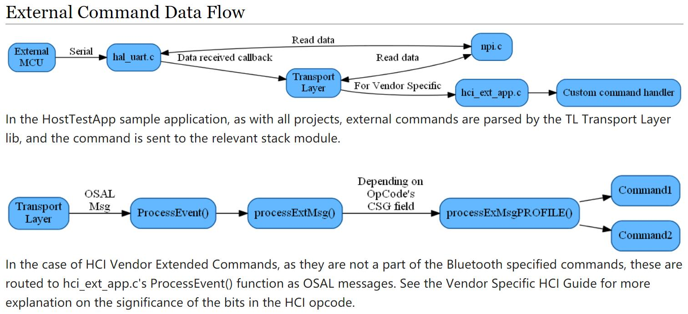

HostTestRelease
这部分可以跟的代码貌似不对，很多代码都是在库里调用，没有源代码
Source Code
HostTestRelease网络处理器工程：C:\Texas Instruments\BLE-CC254x-1.4.2.2\Projects\ble\HostTest
简要说明
实现了网络处理器配置，即HCI控制器一部分在CC254x上运行，而应用程序和其他协议在PC机上运行；
应用程序通过厂商特定的HCI命令与CC254x通信，这一过程需要通过串口或者虚拟串口来读写CC254x运行的HCI；
可以认为HCI分为PC机部分和CC254x部分，分别有数据编解码程序，然后通过串口进行物理数据通信；
HostTestRelease工程中的hci_ext_app.c将PC发送的消息转化为调用协议栈的API功能，任何从协议栈收到的消息都会发送给外部PC；
以上并不是说HostTestRelease就没有了蓝牙的其他部分协议，HCI解析出来的数据还是要通过其他层的协议来做控制。
外部命令数据流

Code Hacking
HCI命令解析每个厂家都可能不一样，所以移植Linux驱动的时候这部分驱动是需要移植或者修改的；
uint16 HCI_EXT_App_ProcessEvent( uint8 task_id, uint16 events )
{
if ( events & SYS_EVENT_MSG )
{
hciPacket_t *pMsg;
if ( (pMsg = ( hciPacket_t *)osal_msg_receive( hciExtApp_TaskID )) != NULL )
{
uint8 dealloc = TRUE;
// Process incoming messages
switch ( pMsg->hdr.event )
{
// Incoming HCI extension message
case HCI_EXT_CMD_EVENT:
dealloc = processExtMsg( pMsg ); <------------------貌似只有这里面可以自己修改、定制
break;
case HCI_GAP_EVENT_EVENT:
{
if ( pMsg->hdr.status == HCI_COMMAND_COMPLETE_EVENT_CODE )
{
hciEvt_CmdComplete_t *pkt = (hciEvt_CmdComplete_t *)pMsg;
osal_msg_hdr_t *msgHdr;
uint8 len;
msgHdr = (osal_msg_hdr_t *)pMsg;
msgHdr--; // Backup to the msg header
len = (uint8)(msgHdr->len - sizeof ( hciEvt_CmdComplete_t ));
HCI_SendCommandCompleteEvent( HCI_COMMAND_COMPLETE_EVENT_CODE, pkt->cmdOpcode, len, pkt->pReturnParam );
}
else if ( pMsg->hdr.status == HCI_VE_EVENT_CODE )
{
hciEvt_VSCmdComplete_t *pkt = (hciEvt_VSCmdComplete_t *)pMsg;
HCI_SendCommandCompleteEvent(HCI_VE_EVENT_CODE, pkt->cmdOpcode,
pkt->length, pkt->pEventParam);
}
}
break;
default:
dealloc = processEvents( (osal_event_hdr_t *)pMsg );
break;
}
// Release the OSAL message
if ( dealloc )
{
VOID osal_msg_deallocate( (uint8 *)pMsg );
}
}
// return unprocessed events
return (events ^ SYS_EVENT_MSG);
}
if ( events & GAP_EVENT_SIGN_COUNTER_CHANGED )
{
// Sign counter changed, save it to NV
VOID osal_snv_write( BLE_NVID_SIGNCOUNTER, sizeof( uint32 ), &hciExtSignCounter );
return ( events ^ GAP_EVENT_SIGN_COUNTER_CHANGED );
}
// Discard unknown events
return 0;
}
/*********************************************************************
* @fn processExtMsg
*
* @brief Parse and process incoming HCI extension messages.
*
* @param pMsg - incoming HCI extension message.
*
* @return none
*/
static uint8 processExtMsg( hciPacket_t *pMsg )
{
uint8 deallocateIncoming;
bStatus_t stat = SUCCESS;
uint8 rspDataLen = 0;
hciExtCmd_t msg;
uint8 *pBuf = pMsg->pData;
// Parse the header
msg.pktType = *pBuf++;
msg.opCode = BUILD_UINT16( pBuf[0], pBuf[1] );
pBuf += 2;
msg.len = *pBuf++;
msg.pData = pBuf;
switch( msg.opCode >> 7 )
{
case HCI_EXT_L2CAP_SUBGRP:
stat = processExtMsgL2CAP( (msg.opCode & 0x007F), &msg, &rspDataLen );
break;
case HCI_EXT_ATT_SUBGRP:
stat = processExtMsgATT( (msg.opCode & 0x007F), &msg );
break;
case HCI_EXT_GATT_SUBGRP:
stat = processExtMsgGATT( (msg.opCode & 0x007F), &msg, &rspDataLen );
break;
case HCI_EXT_GAP_SUBGRP:
stat = processExtMsgGAP( (msg.opCode & 0x007F), &msg, &rspDataLen );
break;
case HCI_EXT_UTIL_SUBGRP:
stat = processExtMsgUTIL( (msg.opCode & 0x007F), &msg, &rspDataLen );
break;
default:
stat = FAILURE;
break;
}
// Deallocate here to free up heap space for the serial message set out HCI.
VOID osal_msg_deallocate( (uint8 *)pMsg );
deallocateIncoming = FALSE;
// Send back an immediate response
rspBuf[0] = LO_UINT16( HCI_EXT_GAP_CMD_STATUS_EVENT );
rspBuf[1] = HI_UINT16( HCI_EXT_GAP_CMD_STATUS_EVENT );
rspBuf[2] = stat;
rspBuf[3] = LO_UINT16( 0xFC00 | msg.opCode );
rspBuf[4] = HI_UINT16( 0xFC00 | msg.opCode );
rspBuf[5] = rspDataLen;
// IMPORTANT!! Fill in Payload (if needed) in case statement
HCI_SendControllerToHostEvent( HCI_VE_EVENT_CODE, (6 + rspDataLen), rspBuf );
return ( deallocateIncoming );
}